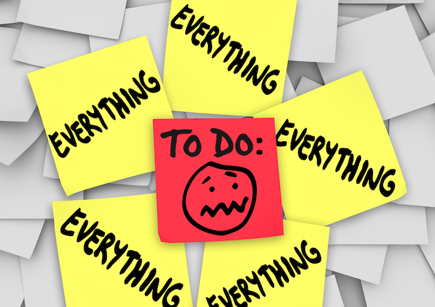

"This week was slightly hectic with not only commitments from my other courses but external factors such as work. I was slightly overwhelmed by how little time I had left for doing the various activities and ended up stressing out and thus losing even more time in the process. Parsing was especially crazy for me since it took me ages to figure out that there was actually three functions that needed to be created instead of one.
However I still managed to complete majority of the activities by the deadline but was slightly late for the assignment 2 because of the extent of my stress ><. urghh.
Also, this week we got a new member in our small group for labs and with an extra person, there was now less workload on our shoulders!! It was much easier to tackle the lab activities. Even though we still didn't manage to finish both activities in the duration of the tutelab, we managed to finish the majority of it!!! It was such fun working with my team members ( Gary & Henna) and despite all our struggles, we have managed to pull through it all! ^.^
This week's lecture emphasised the need for a different approach towards risk because we always overprotect most obvious components and end up neglecting the most vulnerable places.What I learnt from this lecture was that the safest option may be the worst way of protection and in many situations, it is actually a good choice to take a risk. Richard also showed us most systems are flawed using the example of his attempts to take down an unwanted website by taking down the ip address but as a result, the url was just connected to a new ip address. This presents how no matter 'complex' a system is, there always to get past it!
Current Craftsmanship Level: Less chunky and easier to read with use of functions
Current level of C: ability to create basic functions and programs
Improvements
(1) C skills:
(2)Improve on craftsmanship
(3)Regularly meet up with lab partner to work on tutelab activities
(4) Read through other resumes for ideas on something awesome
Continue to improve C level..